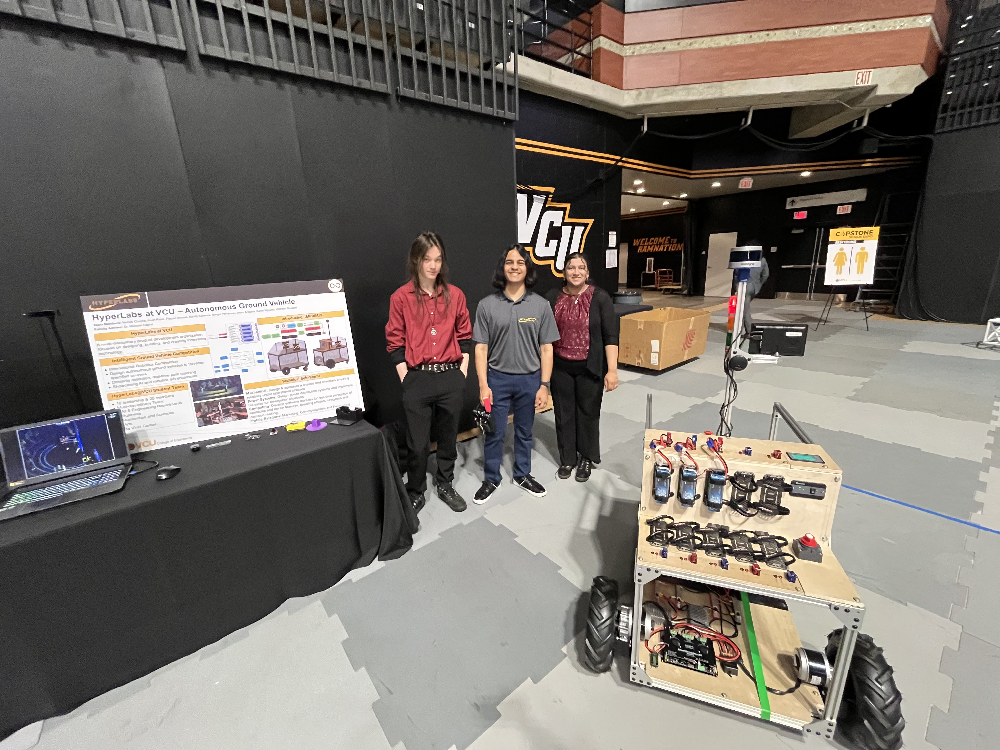

Background
During my first year at VCU, I was a member of the Mechanical Team with Hyperlabs, an engineering student organiation designed around competing in the Intelligent Ground Vehicles Competition (IGVC). We sought to design a vehicle capable of navigating a complex obstacle course without any human input, simulating real-world situations a self-driving vehicle may encounter.
Due to some issues among the Computing Team, our team was unfortunately unable to compete in IGVC 2024, however we were still able to develop a working prototype that accomplished the major goals set out in the design criteria for the competition.
Planning and Preparation Phase
When I first joined Hyperlabs, the Mechanical Team consisted of only three members; myself, and the existing two team captains. This close-knit team format allowed me to take a much more direct role in the design process than I otherwise would have been able to, since I was able to easily access the executives and communicate to them what needs to be accomplished.
My first major contribution to the project came when we designed the chassis for the vehicle, which was named IMPRIMUS early-on, meaning "the first of its kind". I designed the entire exterior vehicle using SolidWorks, utilizing aluminum extrusion for the structural elements and machined wooden panels to protect the internal electronics. This design was also chosen specifically to fit within the design footprint for the competition and ensure a stable center-of-mass for the vehicle so that it would not overturn.
This model provided a reference for the Sensors and Computing teams to implement into their work, and also allowed our team to generate a bill of materials for the initial frame assembly. We were able to submit this generated cost analysis as justification for increased SGA funding, which allowed us to move forward on the project extremely quickly.
Chassis Assembly
The use of aluminum extrusion made our design extremely easy to construct in our university Makerspace. We utilized drop-in inserts that allowed for quick assembly and easy resolution of mistakes. We spent a total of 10 man-hours on the frame assembly, then began working on the wood panels. These panels were sourced from a local hardware store then cut down to size using a mitre saw. From there, we shaped the panels using a router and jigsaw where necessary, before sanding the pieces smooth.
These panels were meant to protect the internals of the machine while being easily removable, allowing us to work on the internals of the vehicle without issue. We also tested the weight of our components, including the power supply and on-board computer, to ensure the vehicle would be stable with this added weight.
Incorporating Sub-teams
While our team was busy putting together the robot, the Sensor and Computing teams were implementing our design into their autonomous simulation software. We also worked with the Power Systems subteam to connect the power supply and UPS. Our team designed a motor mount for a wheelchair motor, then 3D printed a prototype to ensure our dimensions were correct. Following this, we submitted a work-order to our Makerspace to have the mount machined from aluminum, providing structural stability and reliability for such a heavy component. Finally, after including the wheels and implementing remote control, we had a working vehicle that we could then convert to autonomous.
As stated above in the introduction for this project, we unfortunately did not make it to the IGVC 2024 competition because we did not have enough confidence in the reliability of our autonomous model. This was a task being handled by the Computing team, however due to a combination of a lack of leadership and an inability to retain members, the progress from this sub-team was extremely slow. I made an attempt to assist with the programming of the model, however I was still unfamiliar with ROS at the time and was largely only able to help with programming concepts and advice. I did learn a tremendous amount about ROS through this experience, but I found it very difficult to both learn and push the Computing team forward at the same time.
Sensor Mounts
Even after the physical vehicle had been constructed based on our design, we still needed to integrate the necessary sensors to provide enough data for the autonomous model to succeed. These included several cameras, both optical and depth-sensing, LiDAR, encoders for wheel motion, a kill-switch feature, and much more. I designed several adjustable mounts for these components that were designed to slot into aluminum extrusions using the same drop-in tabs we used for the frame assembly. Some of these designs are listed below:
Capstone Design Expo 2024
I traveled with other members of Hyperlabs to present our work at VCU's Capstone Design Expo for Fall 2024. This expo is intended for senior design projects and graduate research teams, however our organization was encouraged to submit our work by a number of professors in the College of Engineering. While we didn't make it to IGVC 2024, we still had an impressive prototype that exhibited powerful self-navigation abilities, and we spoke to several employers and research teams who were impressed with our progress in just under a year. Ultimately, the Capstone Expo was a fantastic experiene and I tremendously enjoyed the opportunity to see what other students were working on, as well as present my own work.
Conclusions
Overall I was extremely happy with how this project turned out, and we were successful in developing an autonomous vehicle capable of navigating its environment by observing its surroundings. I was able to get a vast array of hands-on experience from this project as well, giving me insight into everything from submitting procurement requests, high voltage safety considerations, cost and design analysis, public speaking and presenting, and applying engineering principles to solving tangible problems. I had a fantastic time working with Hyperlabs and meaningfully connected with many of my team members, and I'm extremely grateful to have had the opportunity to work on such an innovative and interesting project.